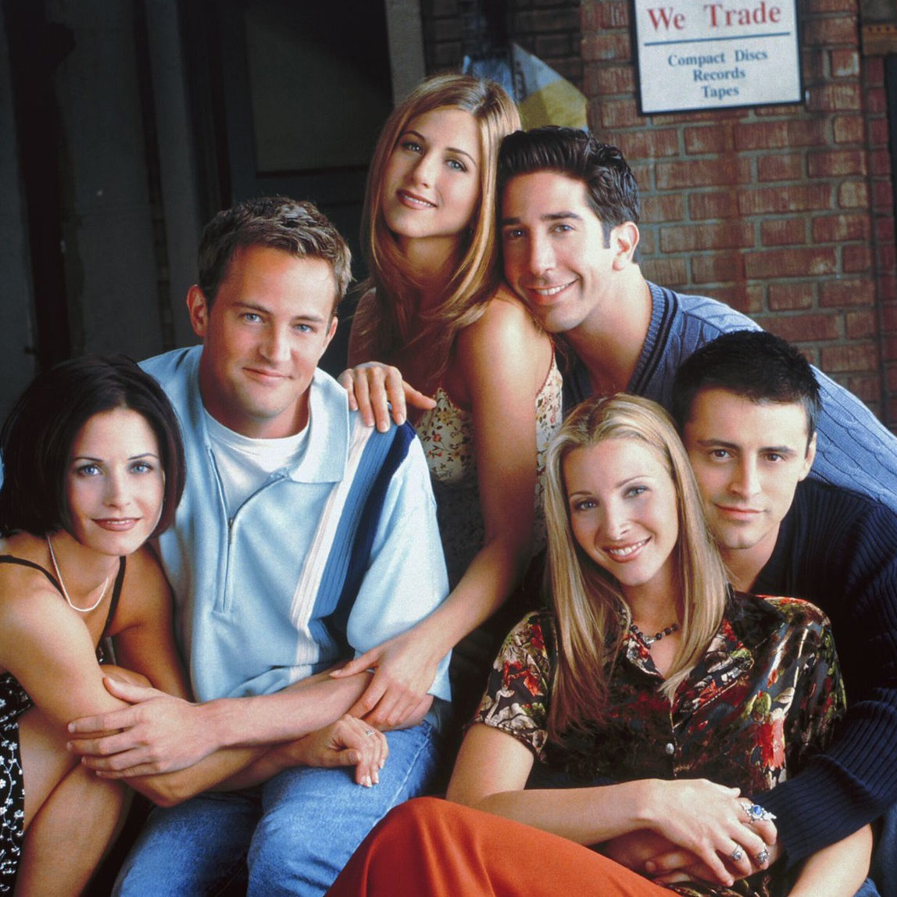
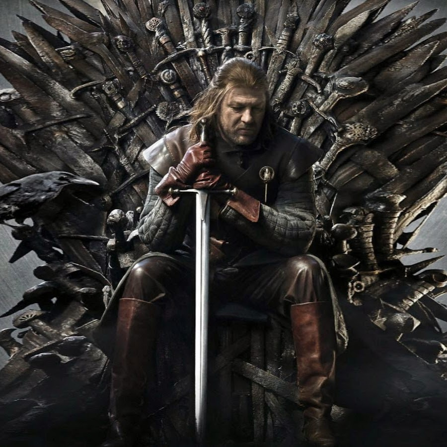
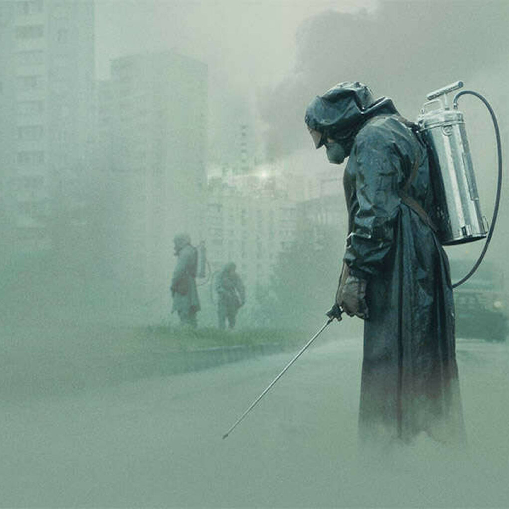
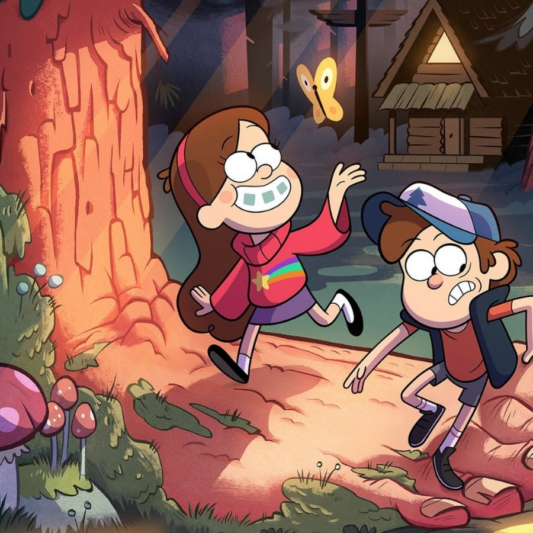
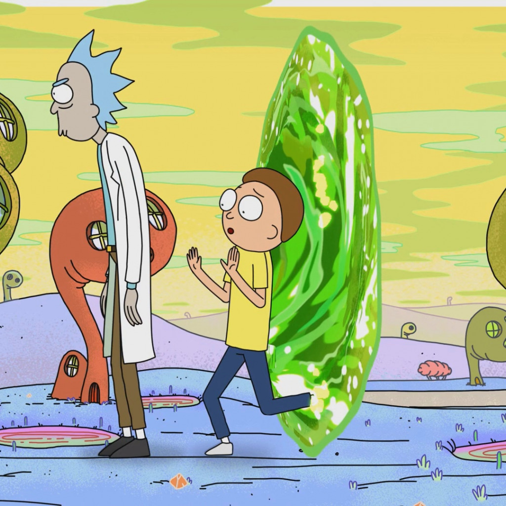
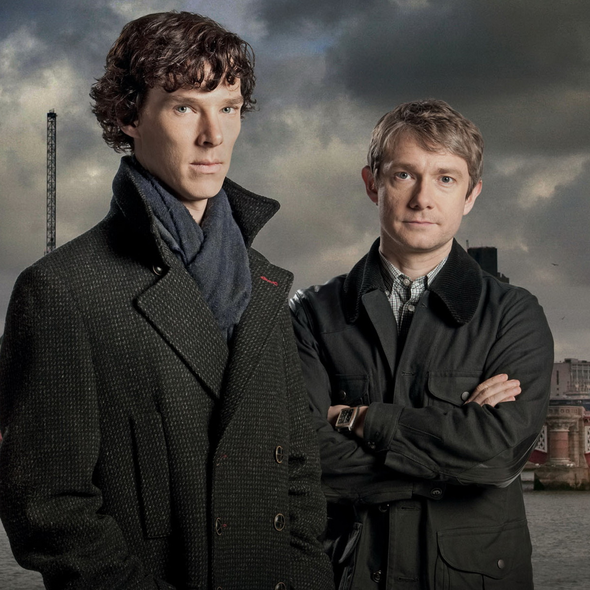
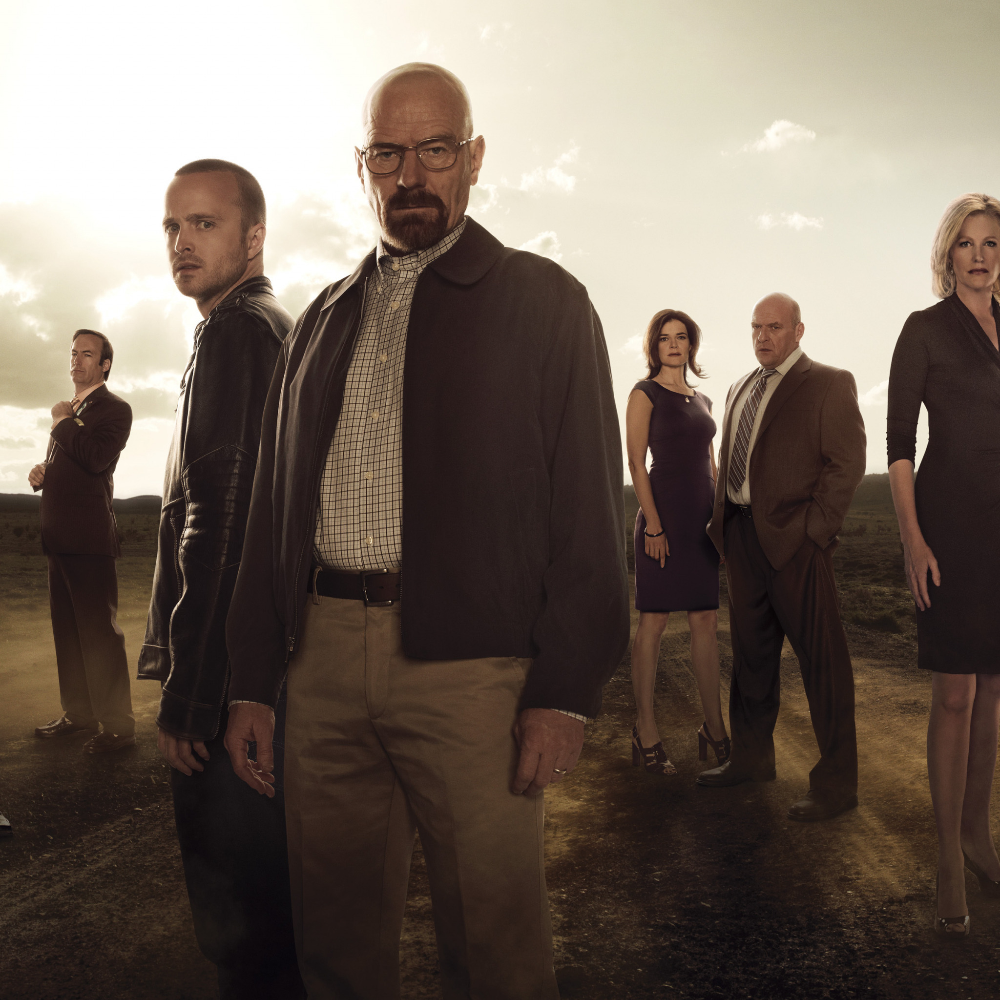
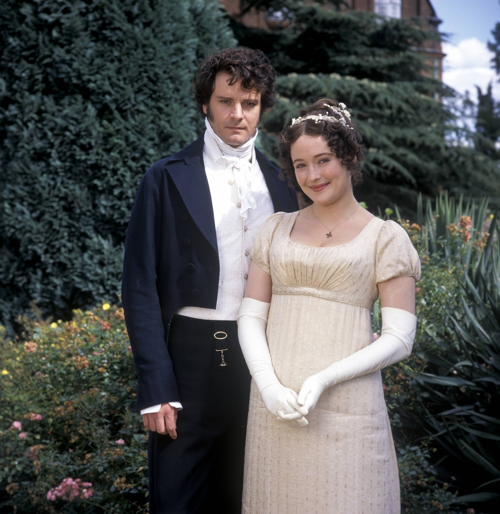
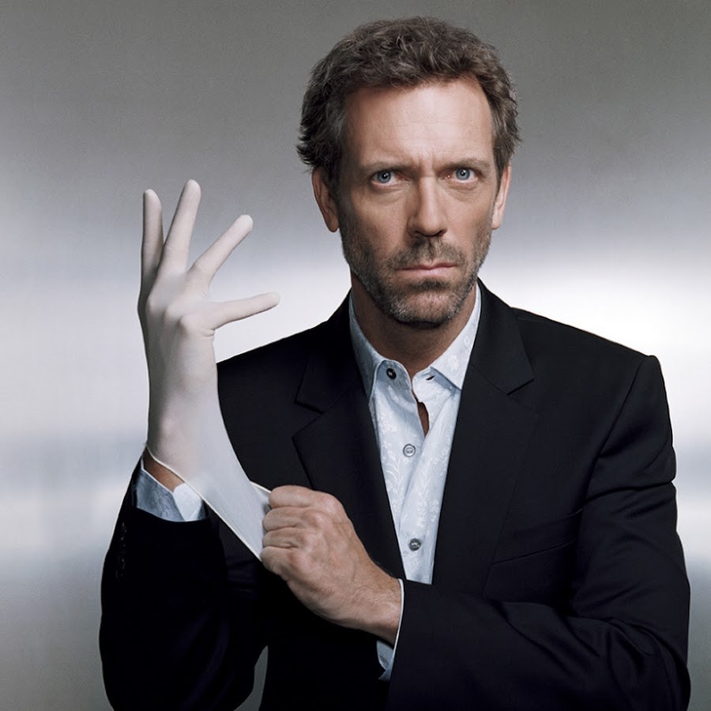
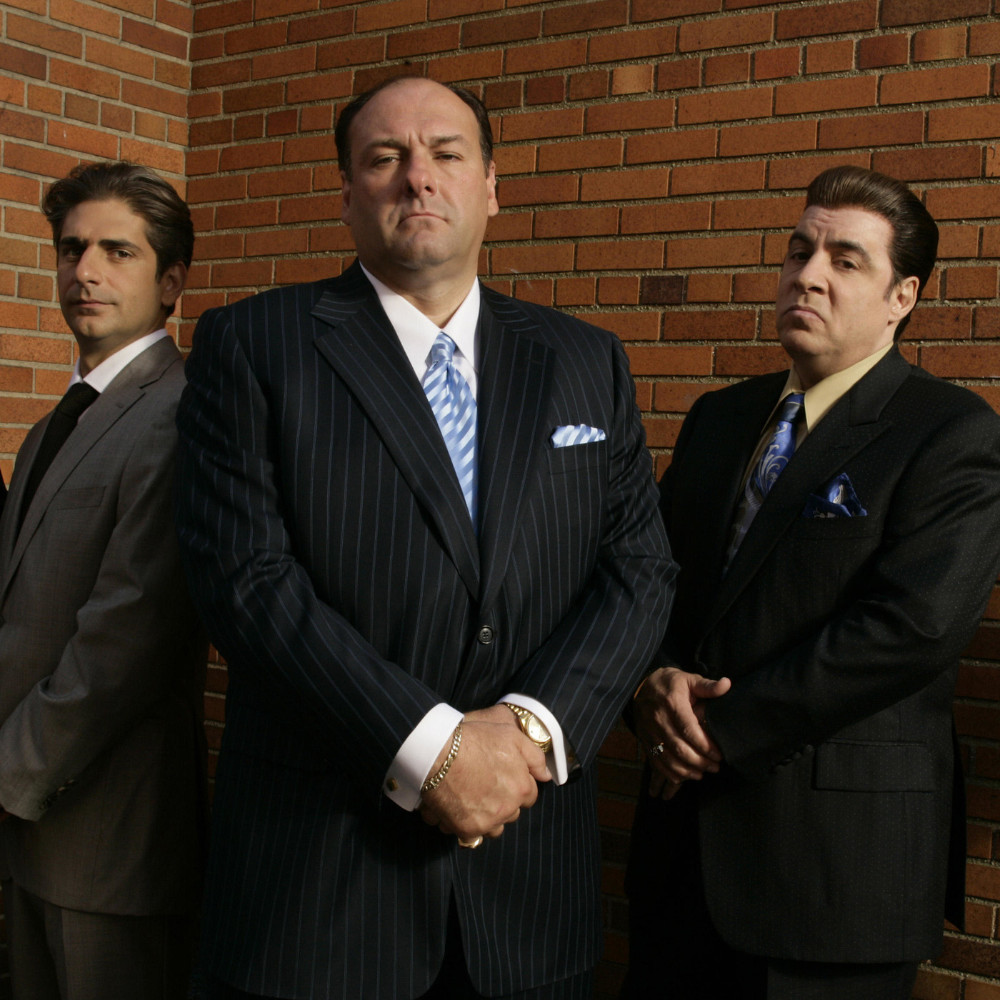

США • комедия
Шестеро друзей – Рейчел, Моника, Фиби, Джоуи, Чендлер и Росс – живут по соседству,вместе убивают время, делятся секретами и иногда очень сильно влюбляются.
Рейтинг на КиноПоиске: 9.3

США • фэнтези
К концу подходит время благоденствия, и лето, длившееся почти десятилетие, угасает. Вокруг средоточия власти Семи королевств, Железного трона, зреет заговор, и в это непростое время король решает искать поддержки у друга юности Эддарда Старка. В мире, где все — от короля до наемника — рвутся к власти, плетут интриги и готовы вонзить нож в спину, есть место и благородству, состраданию и любви. Между тем, никто не замечает пробуждение тьмы из легенд далеко на Севере — и лишь Стена защищает живых к югу от нее.
Рейтинг на КиноПоиске: 9.0

США • драма
6 апреля 1986 года в 1:23:45 во время проведения эксперимента по безопасности на Чернобыльской АЭС происходит взрыв реактора и пожар. Поднятые по тревоге пожарные без спецзащиты прибывают на место аварии, не подозревая, что оказались в эпицентре крупнейшей в истории человечества техногенной катастрофы. Руководство ЧАЭС уверяет Кремль, что ситуация под контролем, и радиационный фон в норме, но по настоянию академика Легасова его вместе с зампредседателя Совета Министров Борисом Щербиной отправляют разобраться в происходящем на месте.
Рейтинг на КиноПоиске: 8.9

США • мультфильм
История рассказывает о приключениях близнецов, брата и сестры Диппера и Мэйбл Пайнс, чьи летние планы отправляются в чулан, когда родители оправляют их к дальнему родственнику в тихий городок Гравити Фолз. Но так ли прост этот город, родственник и жители, и какие тайны ждут своих первооткрывателей?
Рейтинг на КиноПоиске: 8.9

США • мультфильм
В центре сюжета - школьник по имени Морти и его дедушка Рик. Морти - самый обычный мальчик, который ничем не отличается от своих сверстников. А вот его дедуля занимается необычными научными исследованиями и зачастую полностью неадекватен. Он может в любое время дня и ночи схватить внука и отправиться вместе с ним в безумные приключения с помощью построенной из разного хлама летающей тарелки, которая способна перемещаться сквозь межпространственный тоннель. Каждый раз эта парочка оказывается в самых неожиданных местах и самых нелепых ситуациях.
Рейтинг на КиноПоиске: 8.9

Великобритания • детектив
События разворачиваются в наши дни. Он прошел Афганистан, остался инвалидом. По возвращении в родные края встречается с загадочным, но своеобразным гениальным человеком. Тот в поиске соседа по квартире. Лондон, 2010 год. Происходят необъяснимые убийства. Скотланд-Ярд без понятия, за что хвататься. Существует лишь один человек, который в силах разрешить проблемы и найти ответы на сложные вопросы.
Рейтинг на КиноПоиске: 8.9

США • триллер
Школьный учитель химии Уолтер Уайт узнаёт, что болен раком лёгких. Учитывая сложное финансовое состояние дел семьи, а также перспективы, Уолтер решает заняться изготовлением метамфетамина. Для этого он привлекает своего бывшего ученика Джесси Пинкмана, когда-то исключённого из школы при активном содействии Уайта. Пинкман сам занимался варкой мета, но накануне, в ходе рейда УБН, он лишился подельника и лаборатории.
Рейтинг на КиноПоиске: 8.9

Великобритания • драма
Элизабет — одна из пяти дочерей небогатого провинциального помещика, мистера Беннета. К сожалению, в семействе нет ни одного сына, поэтому, в случае смерти мистера Беннета, все их имущество перейдет их дальнему родственнику по мужской линии. Когда по соседству появляется богатый мистер Бингли и его друг, загадочный и еще более богатый мистер Дарси, миссис Беннет начинает питать большие надежды на скорое замужество одной из своих дочерей. Мистер Бингли обращает внимание на старшую сестру Беннет, красавицу Джейн. Но гордый мистер Дарси не одобряет увлечения друга и стремится положить ему конец, однако сам неожиданно увлекается Элизабет...
Рейтинг на КиноПоиске: 8.8

США • драма
Сериал рассказывает о команде врачей, которые должны правильно поставить диагноз пациенту и спасти его. Возглавляет команду доктор Грегори Хаус, который ходит с тростью после того, как его мышечный инфаркт в правой ноге слишком поздно правильно диагностировали. Как врач Хаус просто гений, но сам не отличается проникновенностью в общении с больными и с удовольствием избегает их, если только есть возможность. Он сам всё время проводит в борьбе с собственной болью, а трость в его руке только подчеркивает его жесткую, ядовитую манеру общения.
Рейтинг на КиноПоиске: 8.8

США • драма
Повседневная жизнь современного Крестного отца: его мысли - стремительны, действия - решительны, а юмор - черен. Мафиозный босс Северного Джерси Тони Сопрано успешно справляется с проблемами «Семьи».
Но вот собственная семья немного подкачала: дети от рук отбились, брак - под угрозой, мамаша - пилит. Он надеется на помощь психиатра, но как тому рассказать обо всех своих проблемах, если связан омертой - обетом молчания, нарушать который нельзя под страхом смерти?
Рейтинг на КиноПоиске: 8.7